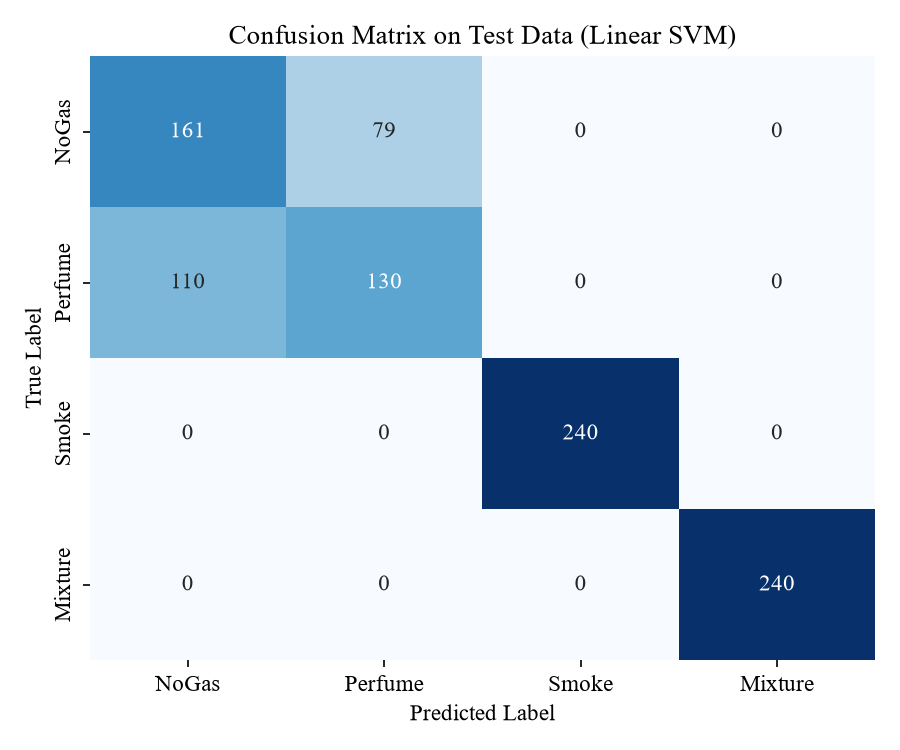
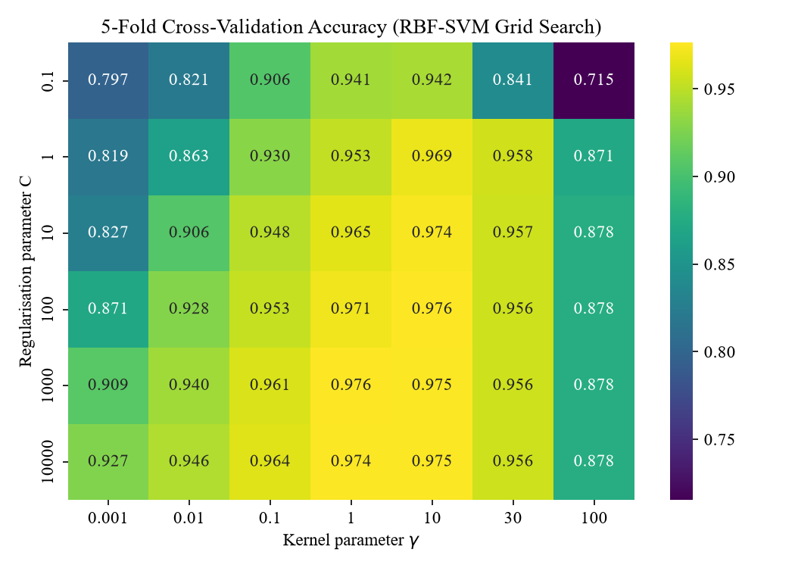
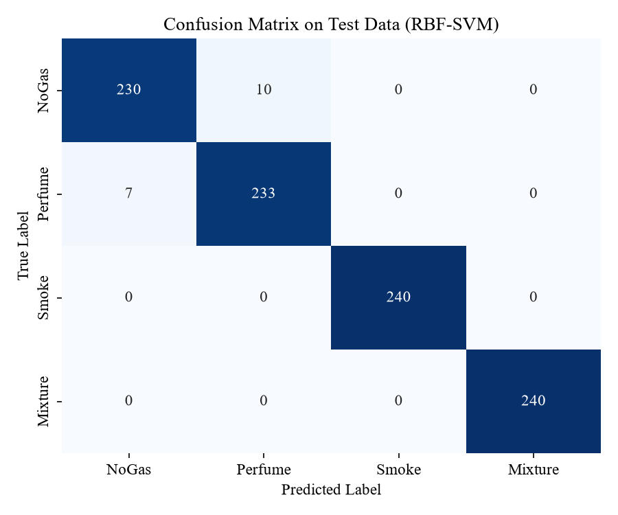
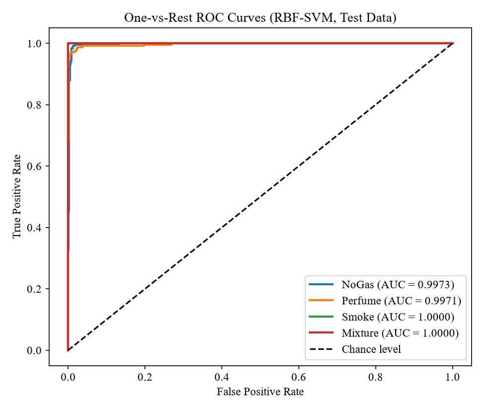
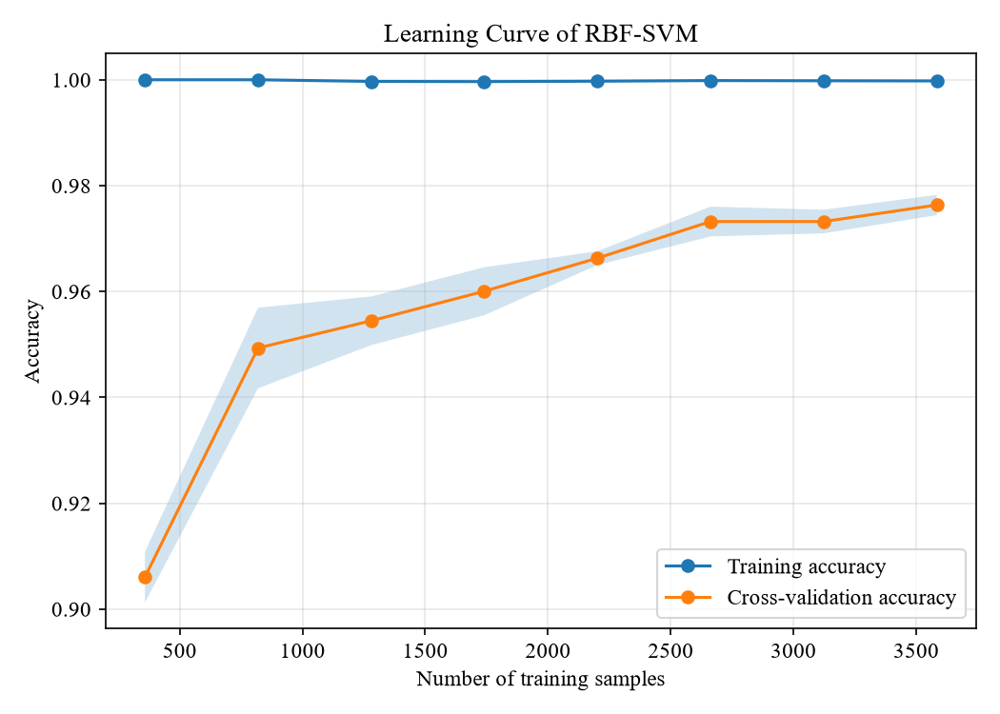
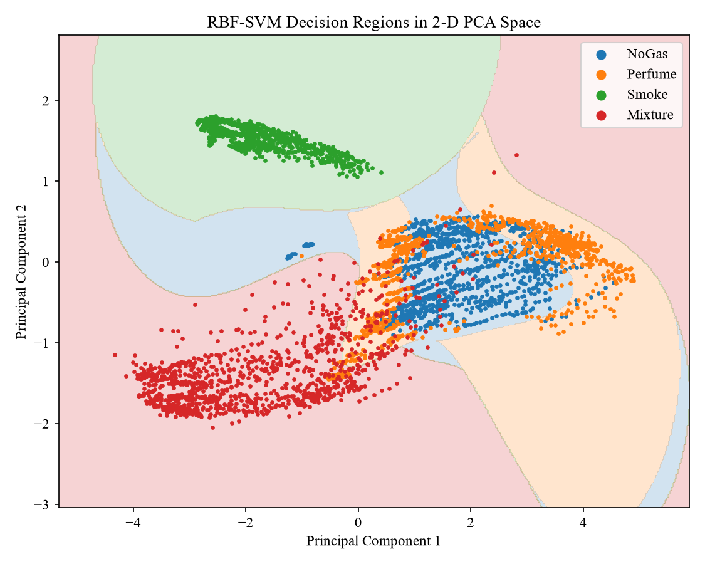
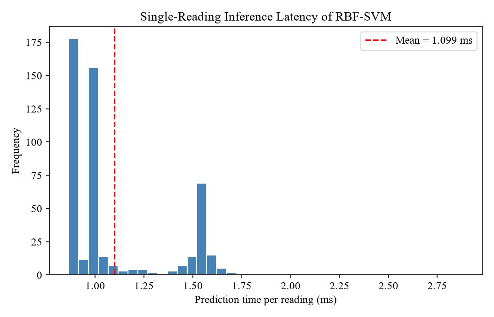

08 · The mathematics
The results, figure by figure
Chapter 4 of the report. For each figure: what it shows, the number to remember, and what it means.
In plain words
A straight-line SVM on raw numbers got 4 out of 5 right. After scaling and tuning, the curved SVM got about 98 out of 100 right on readings it had never seen. Smoke and Mixture were never wrong. The only mistakes were clean air versus perfume, which look almost identical to the sensors.
It is fast: about a thousandth of a second per reading. And it is honest: when tested on later readings instead of random ones, accuracy fell to 54%, because the sensors drift. That is the main thing future work must fix.
1 · Baseline: linear SVM on raw readings

Smoke and Mixture are already perfect (240/240). All 189 errors are NoGas ↔ Perfume: 79 one way, 110 the other. Recall is only 67.1% for NoGas and 54.2% for Perfume.
Training (77.81%) and validation (78.65%) accuracy are just as low, so this is underfitting: a straight boundary is too simple.
2 · The grid search

- Small γ (0.001): nearly linear, 80–93%. Underfits.
- γ around 1–10: flexible enough to separate NoGas from Perfume. Best region.
- γ = 100: drops to about 88%. Each point only "sees" its tiny neighbourhood. Overfits.
- C beyond 100: little extra gain.
3 · The tuned RBF-SVM
| Metric | Baseline | Tuned RBF-SVM |
|---|---|---|
| Training accuracy | 77.81% | 99.98% |
| Validation accuracy | 78.65% | 98.12% |
| Test accuracy | 80.31% | 98.23% |
| Macro precision / recall / F1 | 0.804 / 0.803 / 0.802 | 0.982 / 0.982 / 0.982 |
| Support vectors | 1,047 | 1,304 |

| Class | Precision | Recall | F1 |
|---|---|---|---|
| NoGas | 0.9705 | 0.9583 | 0.9644 |
| Perfume | 0.9588 | 0.9708 | 0.9648 |
| Smoke | 1.0000 | 1.0000 | 1.0000 |
| Mixture | 1.0000 | 1.0000 | 1.0000 |
| Macro | 0.9823 | 0.9823 | 0.9823 |
Validation (98.12%), test (98.23%) and cross-validation (97.63%) agree, so the result is stable on new data from the same sessions. Training is 99.98%, but the gap to test is under two points.
4 · ROC curves and learning curve


5 · Which kernel?
| Kernel (all scaled, all tuned) | Best settings | CV accuracy | Test accuracy |
|---|---|---|---|
| Linear | C = 100 | 85.31% | 84.79% |
| Polynomial | C = 100, degree 3 | 94.84% | 95.52% |
| RBF | C = 100, γ = 10 | 97.63% | 98.23% |
Scaling and tuning alone lift the linear SVM from 80.31% to 84.79%. The rest of the gain (to 98.23%) comes from the RBF kernel's ability to draw tight curved boundaries.

6 · As a leak detector
| Measure | Value |
|---|---|
| Gas readings caught (TP) | 713 of 720 |
| Clean air passed correctly (TN) | 230 of 240 |
| Sensitivity | 99.03% |
| Specificity | 95.83% |
| False alarm rate | 4.17% |
| Missed-gas rate | 0.97% (all 7 misses were Perfume) |
No Smoke or Mixture reading was missed. Because a real leak lasts many readings, a rule such as "alarm after two gas readings in a row" would remove most single false alarms while delaying a true alarm by only 2 seconds.
7 · Real-time speed

| Mean | 1.10 ms |
|---|---|
| Median | 0.99 ms |
| 95th percentile | 1.57 ms |
| Slowest | 2.88 ms |
| Batch, per reading | 0.21 ms |
| Time budget used | ≈ 0.055% of 2 s |
Compare: a thermal-image CNN on a microcontroller needed 1,414 ms per prediction on the same dataset (El Barkani et al., 2024).
8 · The honest test: later readings
Train on the first 70% of each class in time order, test on the last 30%:
| True ↓ / Predicted → | NoGas | Perfume | Smoke | Mixture |
|---|---|---|---|---|
| NoGas | 289 | 48 | 0 | 143 |
| Perfume | 0 | 225 | 0 | 255 |
| Smoke | 0 | 0 | 50 | 430 |
| Mixture | 0 | 0 | 0 | 480 |
Accuracy 54.37%, macro F1 0.5187
Later readings drifted (for example MQ3 in the Smoke session climbed from about 350 to 430) into regions the model had learned as Mixture. This does not cancel the 98% result; it limits it. The 98% says the model recognises the patterns it was trained on. The 54% says a deployed system must be recalibrated or retrained over time. Previous studies on this dataset never ran this test.
9 · Against earlier work on the same data
| Study | Input | Model | Accuracy | Speed reported? |
|---|---|---|---|---|
| Narkhede et al. (2021) | sensors | LSTM | 82% | no |
| Lalithadevi & Krishnaveni (2025) | sensors | SVM, untuned | 88.36% | no |
| Attallah (2023) | sensors as images | 3 CNNs + Bi-LSTM | 93.27% | no |
| Sharma et al. (2024) | sensors | BiLSTM-Dense | 93.39% | no |
| Arya et al. (2024) | sensors + image features | SVM | 94.22% | no |
| Lalithadevi & Krishnaveni (2025) | sensors | tuned random forest | 98.67% | no |
| This project | sensors | tuned RBF-SVM | 98.23% | yes, ≈ 1.1 ms |
Studies used different splits (70/30 vs 70/15/15) and single runs, so gaps of about one point should not be over-read.
Say this — the results in thirty seconds
"The linear baseline reached 80%. Scaling and a tuned RBF kernel raised it to 98.23% on unseen test data, with macro F1 0.982 and AUC 0.999. Smoke and mixture were never misclassified; the only errors were clean air versus perfume. As a leak detector it caught 99% of gas readings, and it classifies a reading in about one millisecond. A time-ordered test dropped accuracy to 54%, which shows drift is the main limitation."